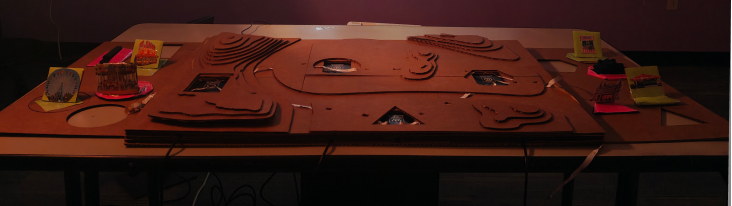
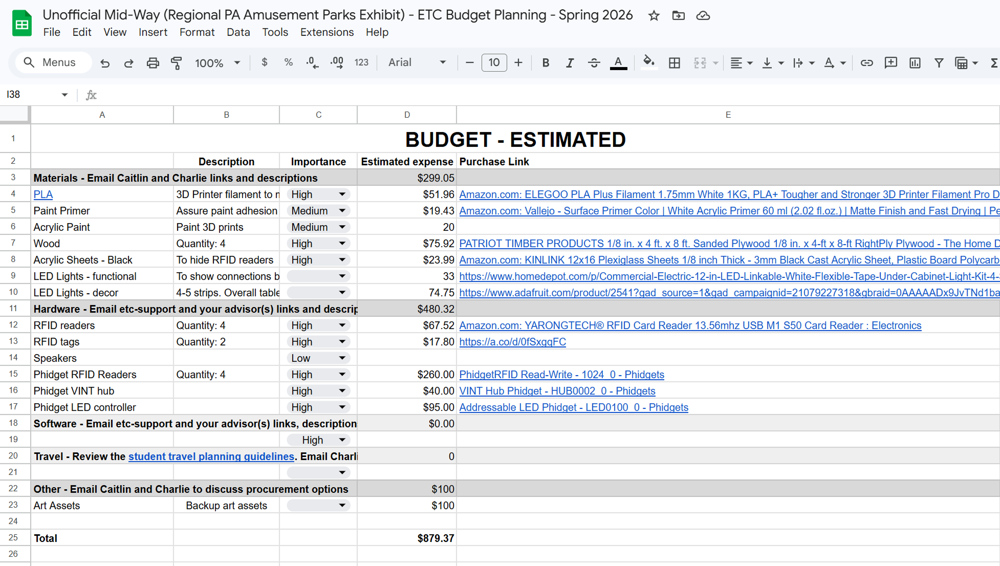
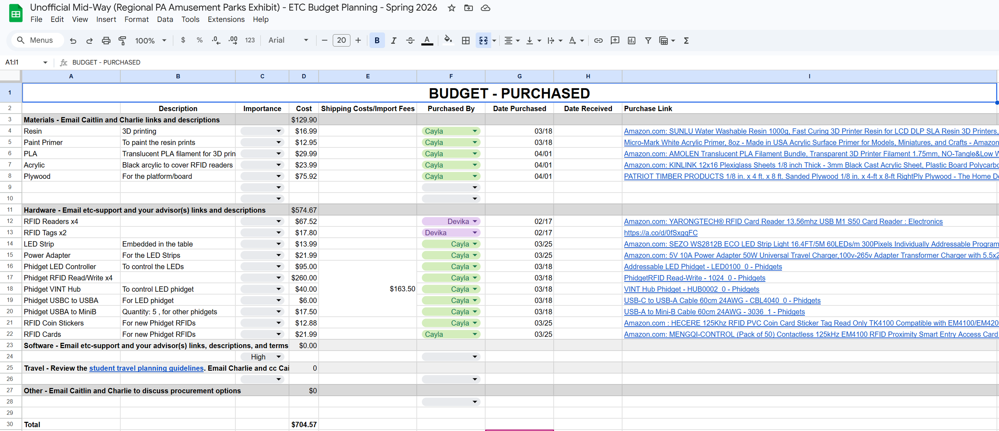
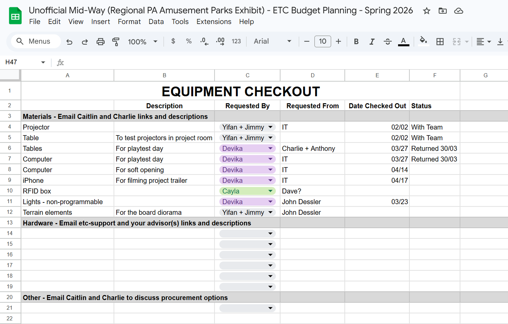
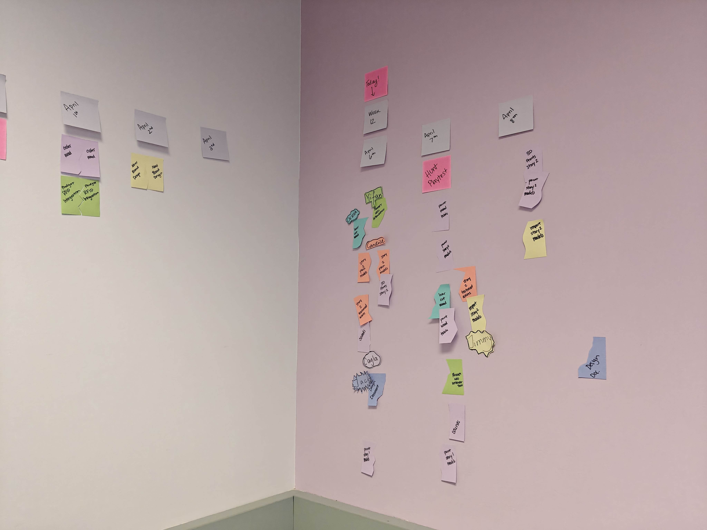
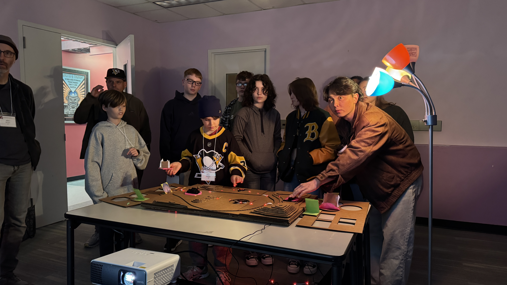
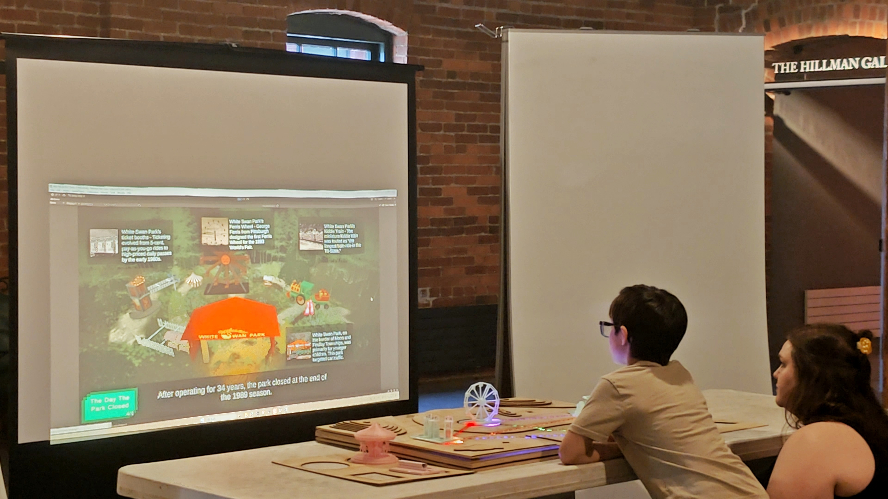
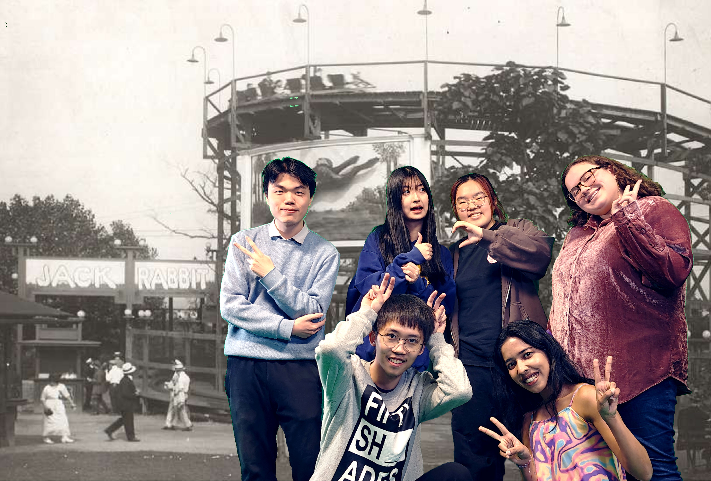
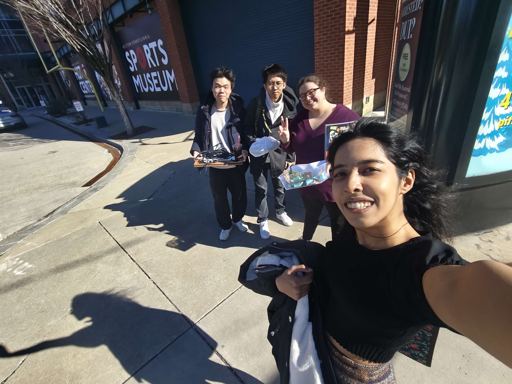

External-facing producer handling client relations, team dynamics, budgeting, and ordering
equipment for a team developing a minimum viable product for the Heinz History Center’s 2027 exhibit on
Western Pennsylvania's amusement park heritage.
ROLE
Producer, Narrative Designer
TIMELINE
Spring 2026

My Role
Client-facing producer, working on maintaining client relations, running meetings,
handling budgeting and purchase orders, and ensuring task management is on track.
Narrative designer creating interactive narratives that fulfill the client's historic
learning objectives, while also telling personalised stories.

Playtesting prototype setup.
Overview
A prototype minimum viable product for the Heinz History Center's 2027 exhibit on Western
Pennsylvania's amusement park heritage.
🤔 Client Needs
- shared experiences
- memorable
- multi-generational
- emotional connection
- transform passive viewing into active participation
- fit into one of their three planned sections (innovation land, thrill factory, story world)
🧠 Player/Guest Needs
- fun, thrilling to learn
- feel inspired to preserve memories
- curious
- proud of connections to Western PA heritage
- for kids, potential career paths designing amusement parks
💡 Team Goals
- fits in the realm of digital + physical
- not super heavy on animation or fabrication
We landed on a physical installation where guests walk up to a table with a terrain of an amusement park with
four missing pieces of different shapes. The table has recognisable 3D printed amusement park attractions
that have bases in the same shapes as these empty slots. These figures have different colours, and when all
four pieces from the same colour are placed on the board, we unlock different rewards like colour,
animation, and narrative.
Production
Budgeting and purchase orders and task management.
Budget and purchases document.



Estimated budget, purchases, and equipment checked out.

Scheduling and task management - our final organizational board by my
co-producer Cayla Kennedy.
Client Communication
Conducted weekly meetings with clients and coordinated site visits, demos, playtests, and project
needs and experience goals.
Meeting agenda and notes sample.
Playtesting
Organized playtests with multiple audiences - school groups, multigenerational family groups, and
CMU students. Coordinated with faculty, staff, and client to acquire the right audiences and
space setup. Onboarded guests to these experiences, provided context, took observation-based
notes, and conducted interviews about user behaviour. Analysed this data for discussions with
team, faculty advisors, and clients, and worked with team to find the bets directions for new
iterations.


Playtesting.

Playtest interviews and feedback collection.
Retrospective
Created during a producer roundtable retrospective workshop run by Stef Harbuck and Charles Johnson.
KEEP: Which of your methods or processes worked particularly well?
- Physical, on-wall organization board
- Talking to teammates individually to find out how things are going, especially if dynamics seem off
STOP: Which of your methods or processes were difficult or frustrating to use?
- Initial ideation process - individual Miro ideation and later discussion
- Online scrum boards
- Getting the team all together for 25 hours a week with conflicting electives and individual worktime preferences
START: How would you do things differently next time?
- Ask questions early on if the team dynamics feel off
- Ideate TOGETHER. Exercises to get ideas out there, reinterpret them, tear them apart, etc.
What was the most gratifying or professionally satisying part of the project?
- Regaining our client's trust after initial misalignment. Going beyond with ideation methods and how to communicate demos.
- The team coming together before major milestones, taking on additional roles, reorganization.
- Being able to get everyone to open up, and solving issues as we converse.
Takeaways
- Being someone who is not just approachable, but also reliable to solve problems - the team kept personal issues to themselves because they thought talking about it would tear the team apart.
- Be quick to pivot if one method does not work (project management tools, communication methods, ideation or brainstorming processes).
- Deadlines and communication does not have to just be weekly.
Reflection
As a first-time producer on a project this long, as well as my first time handling client interactions, I learnt a lot in my role.
One of the most challenging moments was handling internal team dynamics and conflicts within the team, and realising how I could have detected them sooner.
Client relations was another major learning point, especially in taking in client needs and making sure they are understood well by the team, and handling rebuilding relations after misaligned expectations early on.


More
For weekly dev logs written by my co-producer, Cayla Kennedy, visit our website at
https://projects.etc.cmu.edu/mid-way/
Team
Yifan Chen, Jimmy Jian, Cayla Kennedy, Jack Peng, Handan Zhang
Check out some of my other projects!